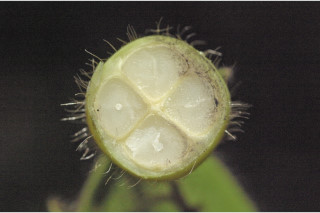
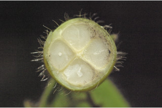

Trees up to 8 m tall.
8 ಮೀ. ಎತ್ತರದವರೆಗೆ ಬೆಳೆಯುವ ಮರಗಳು.
8 മീറ്റര് വരെ ഉയരത്തില് വളരുന്ന മരങ്ങള്.
மரம், 8 மீ. உயரம் வரை வளரக்கூடியது
Bark black; blaze reddish.
ತೊಗಟೆ ಕಪ್ಪು ಬಣ್ಣದಲ್ಲಿರುತ್ತದೆ; ಕಚ್ಚು ಮಾಡಿದ ಜಾಗ ಕೆಂಪು ಬಣ್ಣದಲ್ಲಿರುತ್ತದೆ.
കറുത്ത പുറംതൊലി; വെട്ടുപാടിന് ചുവപ്പു നിറം.
மரத்தின் பட்டை கருப்பு நிறமுடையது, உள்பட்டை சிவப்பு நிறமுடையது.
Branchlets densely long (0.5 cm) hirsute.
ಕಿರುಕೊಂಬೆಗಳು ದಟ್ಟವಾದ, 0.5 ಸೆಂ.ಮೀ.ವರೆಗಿನ ಉದ್ದ ಹೊಂದಿದ ಒರಟು ರೋಮಗಳಿಂದ ಕೂಡಿರುತ್ತವೆ.
കനത്തില് നീളന് രോമാവൃതമായ (0.5 സെ.മീ) നീളമുള്ള രോമങ്ങള്
சிறிய நுனிக்கிளைகள் நெருக்கமானவை, நட்சத்திர வடிவ உரோமங்களுடையது. (0.5 செ.மீ.)
Leaves simple, alternate, distichous; petiole 0.4 cm long, hirsute, terete; lamina 5.5-15 x 2-6.5 cm narrow elliptic-oblong to oblanceolate, apex acuminate, base rounded to subcordate, chartaceous, drying brown densely hirsute on both sides of midrib and at margin, sparsely hirsute on lamina beneath, glabrous above; midrib raised above; secondary_nerves 8-13 pairs, slender; tertiary_nerves broadly reticulate.
ಎಲೆಗಳು ಸರಳವಾಗಿದ್ದು ಪರ್ಯಾಯ ಹಾಗೂ ಸುತ್ತು ಜೋಡನಾ ವ್ಯವಸ್ಥೆ ಯಲ್ಲಿದ್ದು ಕಾಂಡದ ಎರಡೂ ಕಡೆಯ ಎದುರು ಬದರಿನ ಸಾಲಿನಲ್ಲಿರುತ್ತವೆ; ಎಲೆ ತೊಟ್ಟುಗಳು 0.4 ಸೆಂ. ಮೀ.ಉದ್ದವಿದ್ದು, ದುಂಡಾಗಿರುತ್ತದೆ ಹಾಗೂ ಒರಟು ಚಪ್ಪಟೆಯಾಗಿದ್ದು ರೋಮಸಹಿತವಾಗಿರುತ್ತವೆ; ಪತ್ರಗಳು 5.5 -15 X 2 – 6.5 ಸೆಂ.ಮೀ. ಗಾತ್ರ, ಸಂಕುಚಿತ ಅಂಡವೃತ್ತ- ಚತುರಸ್ರದಿಂದ ಬುಗುರಿ-ಭರ್ಜಿವರೆಗಿನ ಆಕಾರ ಹೊಂದಿದ್ದು ಕ್ರಮೇಣ ಚೂಪಾಗುವ ತುದಿ , ದುಂಡಾದ ಅಥವಾ ಉಪ-ಹೃದಯಾಕಾರದ ಬುಡ, ಕಾಗದವನ್ನೋಲುವ ಮೇಲ್ಮೈ ಹೊಂದಿರುತ್ತವೆ.ಪತ್ರದ ಎರಡೂ ಬದಿಯ ಮಧ್ಯನಾಳ ಮತ್ತು ಅಂಚಿನ ಮೇಲೆ ದಟ್ಟವಾದ ರಟು ರೋಮವಿರುತ್ತವೆ, ಪತ್ರದ ತಳಭಾಗದಲ್ಲಿ ಒರಟು ರೋಮಗಳು ವಿರಳವಾಗಿರುತ್ತವೆ, ಪತ್ರದ ಮೇಲ್ಬಾಗ ರೋಮರಹಿತವಾಗಿರುತ್ತದೆ; ಪತ್ರದ ಮೇಲ್ಬಾಗದ ಮಧ್ಯನಾಳ ಉಬ್ಬಿರುತ್ತದೆ;ಎರಡನೇ ದರ್ಜೆಯ ನಾಳಗಳು 8 -13 ಜೋಡಿಗಳಿದ್ದು ತೆಳುವಾಗಿರುತ್ತವೆ;ಮೂರನೇ ದರ್ಜೆಯ ನಾಳಗಳು ವಿಶಾಲ ಜಾಲಬಂಧ ನಾಳ ವಿನ್ಯಾಸದವು.
ഉപശാഖകള്, ലഘുവായ ഇലകള്, ഏകാന്തരമായി, തണ്ടിന്റെ രണ്ടു ഭാഗത്തു മാത്രമായടുക്കിയതുമാണ്; ഉരുണ്ടതും, കനത്ത രോമാവൃതവുമായ, ഇലഞെട്ടിന് 0.4 സെ.മീ. നീളം; പത്രഫലകത്തിന് 5.5 സെ.മീ മുതല് 15 സെ.മീ. വരെ നീളവും 2 സെ.മീ. മുതല് 6.5 സെ.മീ. വരെ വീതിയും, ആകൃതി വീതി കുറഞ്ഞ ദീര്ഘവൃത്തീയ - ആയതാകാരം മുതല് അപകുന്താകാരം വരെയാകാം, പത്രാഗ്രം ദീര്ഘമാണ്, പത്രാധാരം വൃത്താകാരം തൊട്ട് ഉപാഹൃദയാകാരം വരെയാകും, കടലാസ് പോലത്തെ പ്രകൃതം, ഉണങ്ങുമ്പോള് തവിട്ട് നിറമാകുന്നു, ഇരുഭാഗത്തും മുഖ്യ സിരയിലും അരികുകളിലും കനത്തില് രോമാവൃതമാണ്, പത്രഫലകത്തിന്റെ കീഴ്ഭാഗത്ത് ദൂരെ ദൂരെയായി രോമിലമാണ്, മുകളില് അരോമിലമാണ്; മുഖ്യ സിര മുകളില് ഉയര്ന്നതാണ്; നേര്ത്ത, 8 മുതല് 13 വരെ ജോഡി ദ്വിതീയ ഞരമ്പുകള്; വീതിയേറിയ ജാലിതമായ ത്രിതീയ ഞരമ്പുകള്.
இலைகள் தனித்தவை, மாற்றுஅடுக்கமானவை, இருநெடுக்கு வரிசையிலையடுக்கம் (டைஸ்டிக்கஸ்); இலைக்காம்பு 0.4 செ.மீ. நீளமானது, உரோமங்களுடையது, குறுக்குவெட்டுத் தோற்றத்தில் வளையமானது; இலை அலகு 5.5-15 X 2-6.5 செ.மீ., குறுகிய நீள்வட்டம்-நீள்சதுரம் முதல் தலைகீழ் ஈட்டி வடிவமுடையது, அலகின் நுனி வால் போன்று நீண்டது, அலகின் தளம் வட்டமானது முதல் சிறிய இதய வடிவம் (சப்கார்டேட்) போன்றது, சார்ட்டேசியஸ், காய்ந்த இலைகள் அரக்கு நிறமுடையது, இருபரப்பிலும் மையநரம்பு மற்றும் விளிம்புகளில் உரோமங்கள் காணப்படும்; மையநரம்பு மேற்புறத்தில் அலகின் பரப்பைவிட உயர்ந்து இருக்கும்; இரண்டாம் நிலை நரம்புகள் 8-13 ஜோடிகள், மெலிதானது; மூன்றாம் நிலை நரம்புகள் பரந்த வலைப்பின்னல் அமைப்பு கொண்டது.
Flowers unisexual; male flowers in short axillary 1-2 flowered cyme; female flowers solitary, axillary.
ಹೂಗಳು ಏಕ ಲಿಂಗಿಗಳಾಗಿರುತ್ತವೆ; ಗಂಡು ಹೂಗಳುಸಣ್ಣ ಗಾತ್ರದ, ಅಕ್ಷಾಕಂಕುಳಿನಲ್ಲಿನ 1 ರಿಂದ 2 ಹೂಗಳುಳ್ಳ ಮಧ್ಯಾರಂಭಿ ಪುಷ್ಪಮಂಜರಿಯಲ್ಲಿರುತ್ತವೆ; ಹೆಣ್ಣು ಹೂಗಳು ಅಕ್ಷಾಕಂಕುಳಿನಲ್ಲಿ ಒಂಟಿಯಾಗಿರುತ್ತವೆ.
പൂക്കള് ഏകലിംഗികളാണ്; ആണ്പൂക്കള് 1 ഓ 2 ഓ എണ്ണമുള്ള കുറിയ കക്ഷീയ സൈമുകളിലുണ്ടാകുന്നു; പെണ്പൂക്കള് കക്ഷങ്ങളില് ഒറ്റയായുണ്ടാകുന്നു.
ஓர்பால் மலர்கள்; ஆண்மலர்கள் இலைக்கோணங்களில் காணப்படும் 1-2 மலர்கள் கொண்ட சைம்; பெண்மலர்கள் தனித்தவை, இலைக்கோணங்களில் காணப்படும்.
Berry, ovate, bristly hairy to 2 x1.5 cm, fruiting_calyx linear; seeds 4, oblong.
ಬೆರ್ರಿಗಳು 2 X 1.5 ಸೆಂ.ಮೀ. ಗಾತ್ರ ಹೊಂದಿದ್ದು, ಅಂಡಾಕಾರದಲ್ಲಿದ್ದು ಬಿರುಗೂದಲುಗಳಿಂದ ಕೂಡಿರುತ್ತವೆ ; ಪುಷ್ಪಪಾತ್ರೆ ರೇಖಾತ್ಮಕವಾಗಿರುತ್ತದೆ;ಬೀಜಗಳು 4 ಇದ್ದು ಚತುರಸ್ರಾಕಾರದಲ್ಲಿರುತ್ತವೆ;
4 വീതം ആയതാകാര വിത്തുകളുള്ള, കായ, രേഖീയ ബാഹ്യദളത്തോട് കൂടിയ, കടുത്ത രോമങ്ങള് നിറഞ്ഞ, 2 സെ.മീ. വരെ നീളവും 1.5 സെമീ. വരെ വീതിയുമുള്ള അണ്ഡാകാര ബെറിയാണ്.
முழுச்சதைகனி (பெர்ரி), முட்டை வடிவமுடையது, கூர்மையான உரோமங்களுடையது, 2 X 1.5 செ.மீ. நீளமானது, பழத்தின் புல்லி இதழ்கள் நீண்டது; விதைகள் 4, நீள்சதுர வடிவமுடையது.


 
